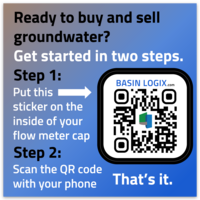

November 30th, 2022
Basin Logix is thrilled to announce a new way to join the biggest groundwater management platform in California! We are bringing a revolutionary way of registering your groundwater wells on Basin Logix. All you need is our sticker and your phone.

Sticker Signup is the fastest and easiest way to get started managing your groundwater assets.
Continuing with our grower first mentality we will be exclusively launching Sticker Signup at the 2022 California Farm Bureau Annual Meeting in Monterey, CA.
The signup process is so fast and easy, the hardest part will be getting a hold of a sticker! Stay tuned for more sticker drop location as we will be announcing these over the coming months. Follow us on Twitter @BasinLogix for the locations!